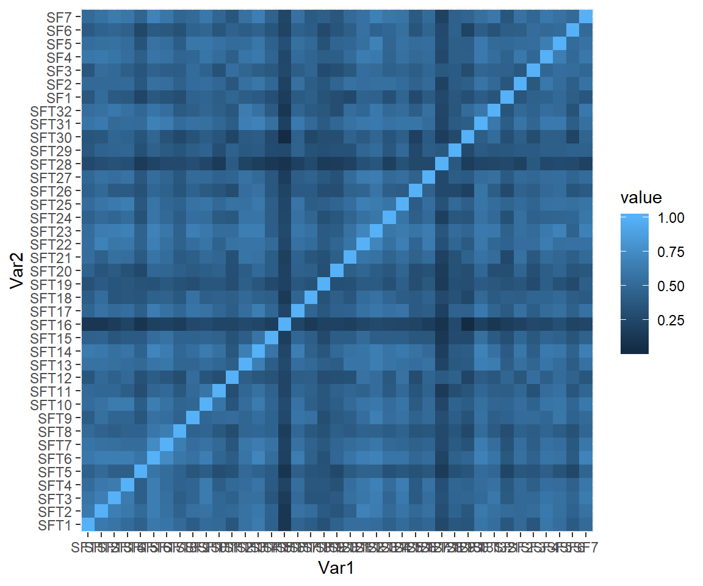
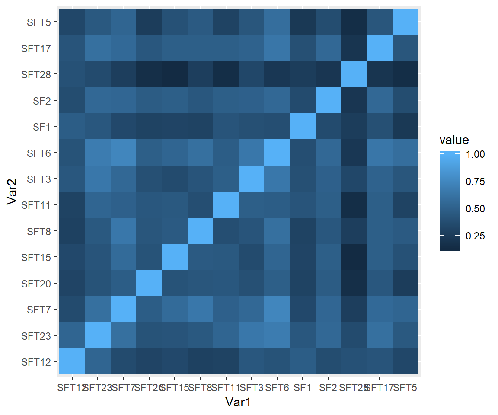
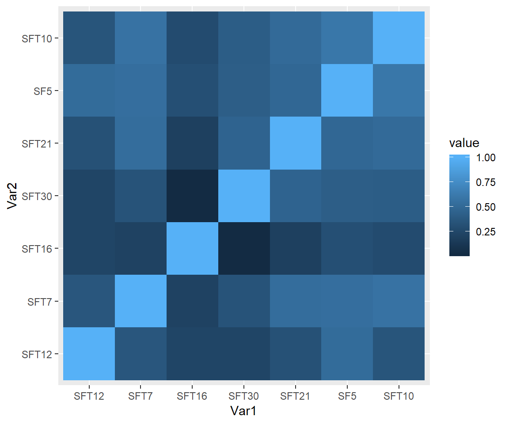
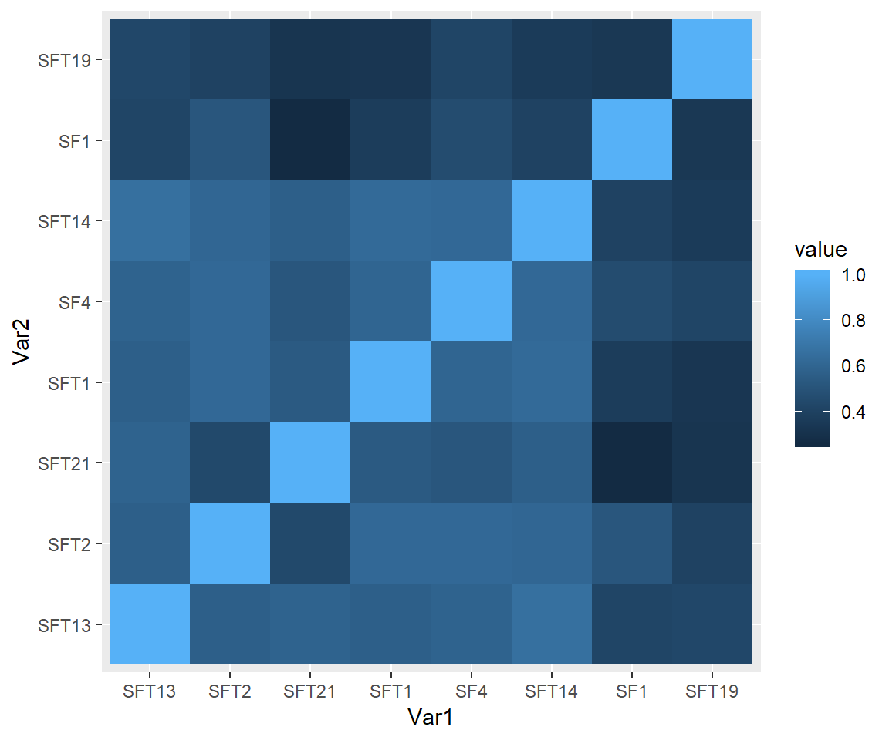
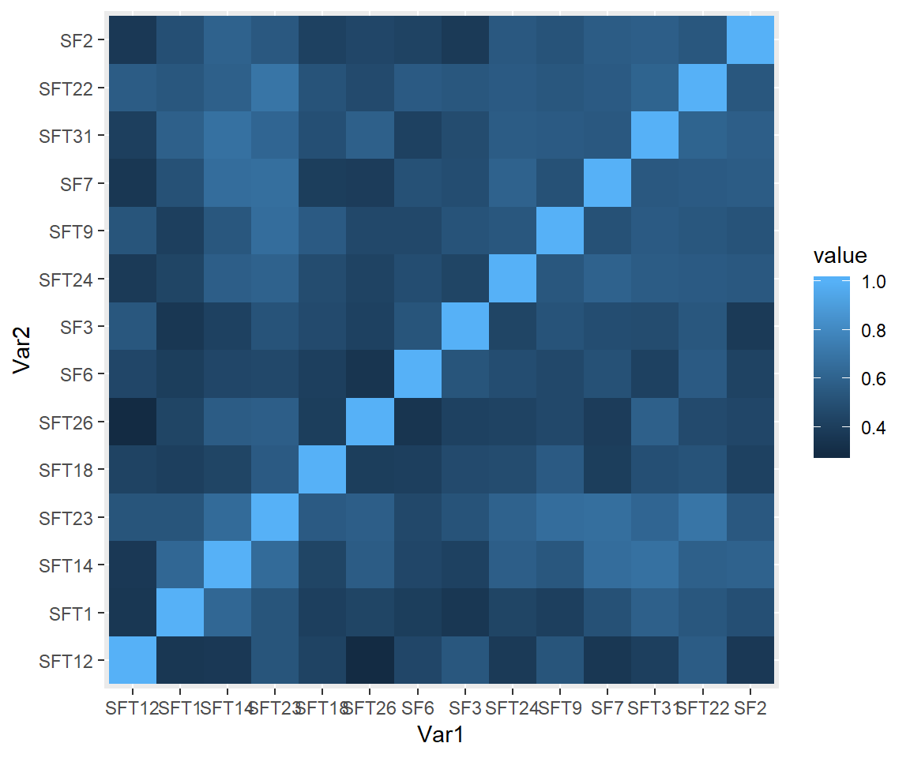

2 分類結果
| ID | Opp | Questions | Corr | 規動状 | X4因子 | 確度 |
|---|---|---|---|---|---|---|
| SFT7 | チームの中では、知らないことを知らないといえる | 0.5128 | 状 | 助話 | ? | |
| SFT12 | * | チームの中で、チームリーダーやメンバーから、人格否定をされることがある | 0.4154 | 規動状 | 助話新 | ? |
| SFT5 | チームの会議などで、チームメンバーは役職や年次に関わらず、ほぼ同じ量の発言時間である | 0.3974 | 規 | 話 | ||
| SFT28 | * | 意見を途中で遮って、自分の意見を喋りはじめるメンバーが居る | 0.2744 | 動 | 話 | |
| SFT17 | 仮に、会議など公式な場では発言しにくくとも、リーダー等への非公式なコミュニケーションチャネルを通じて、考えていることや課題をチーム・組織に伝えられると感じる | 0.5051 | 動 | 話 | ||
| SFT20 | このチームでは、ちょっとした脱線や雑談をしても許される雰囲気がある | 0.4000 | 状 | 話 | ||
| SFT15 | チームメンバーの意見に、反対意見を述べることは、容易にできる | 0.4308 | 状 | 話 | ||
| SFT8 | このチームに新しくアサインされた新人だったとしても、このチームでは自由に発言ができると感じる | 0.4359 | 状 | 話 | ||
| SFT11 | つらい時、しんどい時、休みたい時に、それをチームメンバーに共有することは容易だ | 0.4513 | 状 | 話 | ||
| SFT3 | チームメンバー間は、強い信頼関係で結ばれている | 0.5154 | 状 | 話 | ||
| SFT6 | チームの中では、感じたことや気づいたことを自由にシェアできる | 0.5564 | 状 | 話 | ||
| SF2 | チームメンバーは、やっかいな問題や不都合な出来事について、問題提起することができますか？ | 0.4897 | 動 | 話新 | ? | |
| SF1 | * | もし、このチームでミスをしたら、責められますか？ | 0.4000 | 規動 | 話受 | ? |
| SFT23 | * | このチームで発言をしても、何も変わらないと感じる | 0.5692 | 状 | 話新 | ? |
| SFT16 | * | 気分や状況・体調が悪いメンバーが居たとしても、このチームのみんなは気に留めないだろう | 0.2179 | 状 | 助 | |
| SFT30 | メンバー間で、お互いに、業務状況や課題について把握できている | 0.3692 | 状 | 助 | ||
| SF5 | * | チームのメンバーに、助けを求めることは難しい | 0.5179 | 状 | 助 | |
| SFT10 | z | チームメンバーやリーダーに相談にいったら、いつでも相談に乗ってくれる雰囲気がある | 0.5179 | 状 | 助 | |
| SFT21 | このチームには、たとえお互いに負荷がかかっても、よい仕事をしてやろうという気概がある | 0.4718 | 状 | 助受 | ? | |
| SFT18 | * | このチームでは、他の人と同じであることを強要されているように感じる | 0.4256 | 状 | 新 | |
| SFT26 | * | このチームでは、前例や実績がないものを取り入れることは難しい | 0.4256 | 状 | 新 | |
| SF6 | チームの誰ひとりとして、私の努力を意図的に傷つけようとはしない | 0.4282 | 状 | 新 | ||
| SF3 | * | チームの人々は、異質であることを理由に、他人を拒否することがありますか | 0.4462 | 状 | 新 | |
| SFT24 | 役割に応じて強みや個性を発揮することを歓迎されていると感じる | 0.4795 | 状 | 新 | ||
| SFT9 | * | このチームの中で目立つことはリスクだと感じることがある | 0.4974 | 状 | 新 | |
| SF7 | このチームのメンバーと働くことで、私の独自のスキルや才能が評価され、活用されている | 0.5333 | 状 | 新 | ||
| SFT31 | このチームでは、常識に囚われず、さまざまな視点やものの観方を持ち込むことが歓迎される | 0.5410 | 状 | 新 | ||
| SFT22 | 問題が起きたとき、人を責めるのではなく、解決策を考える雰囲気がある | 0.5513 | 状 | 新 | ||
| SFT19 | このチームは、結果や数字よりも、プロセスや努力・姿勢が見られていると感じる | 0.3564 | 規動 | 受 | ? | |
| SF4 | このチームでは、リスクを取る時でも、安全である | 0.5231 | 状 | 受 | ||
| SFT13 | このチームでは、チャレンジ・挑戦することは、損なことではなく、得なことだと思える | 0.5308 | 規状 | 受 | ? | |
| SFT2 | このチームは、減点主義ではなく、加点主義だ | 0.5359 | 規状 | 受 | ? | |
| SFT1 | このチームのみんなは、他ではバカだと思われそうなことでも、このチームの中ではやってみることができる | 0.4795 | 状 | 受新 | ? | |
| SFT14 | 多少現実的でなくても、面白いアイディアを思いついたら、チームに共有してみよう、と思える | 0.5462 | 状 | 受新 | ? | |
| SFT29 | 問題があったとき、リーダーやメンバーの気まぐれで罰されるのではなく、明確なルールに基づいて対応される | 0.4103 | 規 | |||
| SFT4 | チームリーダーは、間違いを潔く認め、謝罪することができる | 0.5000 | 動 | |||
| SFT32 | このチームには大きなビジョンや夢があり、さらにそれが、チームメンバーによく共有・理解されていると感じる | 0.4821 | 状 | |||
| SFT27 | メンバーは、それぞれ個々人や上司のためではなく、顧客や他部署・他チームの役に立つために働いていると感じる | 0.4846 | 状 | |||
| SFT25 | たとえ、仕事として怒られたときも、人としてはフォローしてもらえる | 0.5333 | 動状 | ? |
また、corrに、自分自身を除くすべての質問項目との相関係数の平均値を示した。 上記、相関係数のHeatmapを下記の通り示す。
“SFT16”, “SFT28”については、特に低いスコアを示したため、今後の検討において留意する。
## Var1 Var2 value
## 1 SFT1 SFT1 1.00
## 2 SFT2 SFT1 0.62
## 3 SFT3 SFT1 0.58
## 4 SFT4 SFT1 0.52
## 5 SFT5 SFT1 0.44
## 6 SFT6 SFT1 0.61
2.1 因子①「話しやすさ」
次の14個を話しやすさ因子として特定した。
| ID | Opp | Questions | Corr | 規動状 | X4因子 |
|---|---|---|---|---|---|
| SFT12 | * | チームの中で、チームリーダーやメンバーから、人格否定をされることがある | 0.4154 | 規動状 | 助話新 |
| SFT23 | * | このチームで発言をしても、何も変わらないと感じる | 0.5692 | 状 | 話新 |
| SFT7 | チームの中では、知らないことを知らないといえる | 0.5128 | 状 | 助話 | |
| SFT20 | このチームでは、ちょっとした脱線や雑談をしても許される雰囲気がある | 0.4000 | 状 | 話 | |
| SFT15 | チームメンバーの意見に、反対意見を述べることは、容易にできる | 0.4308 | 状 | 話 | |
| SFT8 | このチームに新しくアサインされた新人だったとしても、このチームでは自由に発言ができると感じる | 0.4359 | 状 | 話 | |
| SFT11 | つらい時、しんどい時、休みたい時に、それをチームメンバーに共有することは容易だ | 0.4513 | 状 | 話 | |
| SFT3 | チームメンバー間は、強い信頼関係で結ばれている | 0.5154 | 状 | 話 | |
| SFT6 | チームの中では、感じたことや気づいたことを自由にシェアできる | 0.5564 | 状 | 話 | |
| SF1 | * | もし、このチームでミスをしたら、責められますか？ | 0.4000 | 規動 | 話受 |
| SF2 | チームメンバーは、やっかいな問題や不都合な出来事について、問題提起することができますか？ | 0.4897 | 動 | 話新 | |
| SFT28 | * | 意見を途中で遮って、自分の意見を喋りはじめるメンバーが居る | 0.2744 | 動 | 話 |
| SFT17 | 仮に、会議など公式な場では発言しにくくとも、リーダー等への非公式なコミュニケーションチャネルを通じて、考えていることや課題をチーム・組織に伝えられると感じる | 0.5051 | 動 | 話 | |
| SFT5 | チームの会議などで、チームメンバーは役職や年次に関わらず、ほぼ同じ量の発言時間である | 0.3974 | 規 | 話 |
上記について、相関係数を確認すると、下記のとおり。 
\(\text{Cronbach's}\space{} \alpha \space{}\)を計算する。
## raw_alpha std.alpha G6(smc) average_r S/N ase mean sd median_r
## 0.9089 0.9124 0.9204 0.4266 10.42 0.008407 5.077 1.076 0.4344内部信頼性は、\(\alpha_{\text{f1}} = 0.9124 >0.8\)
また、もしその質問項目をdropした際、この信頼性係数\(\alpha\)がどのようになるかを下記の通りまとめた。
## raw_alpha std.alpha G6(smc) average_r S/N alpha se var.r med.r
## SFT12 0.9047 0.9088 0.9149 0.4339 9.964 0.008793 0.01780 0.4433
## SFT23 0.8966 0.9011 0.9089 0.4121 9.114 0.009603 0.01597 0.4206
## SFT7 0.8972 0.9011 0.9085 0.4120 9.109 0.009513 0.01489 0.4207
## SFT20 0.9048 0.9087 0.9169 0.4337 9.956 0.008816 0.01716 0.4411
## SFT15 0.9033 0.9070 0.9149 0.4288 9.758 0.008967 0.01698 0.4348
## SFT8 0.9018 0.9058 0.9135 0.4253 9.621 0.009087 0.01706 0.4297
## SFT11 0.9030 0.9068 0.9142 0.4281 9.733 0.008974 0.01712 0.4290
## SFT3 0.8997 0.9037 0.9117 0.4194 9.389 0.009291 0.01700 0.4337
## SFT6 0.8957 0.8998 0.9063 0.4084 8.975 0.009675 0.01356 0.4207
## SF1 0.9067 0.9104 0.9177 0.4388 10.166 0.008622 0.01712 0.4466
## SF2 0.9013 0.9047 0.9136 0.4221 9.496 0.009142 0.01722 0.4229
## SFT28 0.9142 0.9165 0.9215 0.4578 10.978 0.007944 0.01094 0.4514
## SFT17 0.8997 0.9034 0.9122 0.4183 9.348 0.009288 0.01655 0.4207
## SFT5 0.9057 0.9089 0.9165 0.4342 9.978 0.008729 0.01621 0.4411dropした際に\(alpha \space{}\)係数が、上がるというのは、内分信頼性に貢献していないと考えられるので、 除外する。そのようなSFT28を除外する。
2.2 因子②「助け合い」
次の14個を話しやすさ因子として特定した。
| ID | Opp | Questions | Corr | 規動状 | X4因子 |
|---|---|---|---|---|---|
| SFT12 | * | チームの中で、チームリーダーやメンバーから、人格否定をされることがある | 0.4154 | 規動状 | 助話新 |
| SFT7 | チームの中では、知らないことを知らないといえる | 0.5128 | 状 | 助話 | |
| SFT16 | * | 気分や状況・体調が悪いメンバーが居たとしても、このチームのみんなは気に留めないだろう | 0.2179 | 状 | 助 |
| SFT30 | メンバー間で、お互いに、業務状況や課題について把握できている | 0.3692 | 状 | 助 | |
| SFT21 | このチームには、たとえお互いに負荷がかかっても、よい仕事をしてやろうという気概がある | 0.4718 | 状 | 助受 | |
| SF5 | * | チームのメンバーに、助けを求めることは難しい | 0.5179 | 状 | 助 |
| SFT10 | z | チームメンバーやリーダーに相談にいったら、いつでも相談に乗ってくれる雰囲気がある | 0.5179 | 状 | 助 |
上記について、相関係数を確認すると、下記のとおり。 
\(\text{Cronbach's}\space{} \alpha \space{}\)を計算する。
## raw_alpha std.alpha G6(smc) average_r S/N ase mean sd median_r
## 0.7981 0.8086 0.8064 0.3763 4.224 0.01965 5.224 1.048 0.3617内部信頼性は、\(\alpha_{\text{f1}} = 0.8086 >0.8\)
また、もしその質問項目をdropした際、この信頼性係数\(\alpha\)がどのようになるかを下記の通りまとめた。
## raw_alpha std.alpha G6(smc) average_r S/N alpha se var.r med.r
## SFT12 0.7818 0.7944 0.7871 0.3917 3.863 0.02169 0.02672 0.4177
## SFT7 0.7563 0.7689 0.7631 0.3568 3.328 0.02414 0.02314 0.3545
## SFT16 0.8233 0.8273 0.8140 0.4439 4.790 0.01741 0.01119 0.4552
## SFT30 0.7900 0.8012 0.7898 0.4017 4.029 0.02083 0.02007 0.3617
## SFT21 0.7588 0.7711 0.7649 0.3596 3.369 0.02383 0.02450 0.3545
## SF5 0.7379 0.7513 0.7404 0.3349 3.021 0.02594 0.02150 0.3386
## SFT10 0.7493 0.7602 0.7539 0.3457 3.170 0.02476 0.02243 0.3386dropした際に\(alpha \space{}\)係数が、上がるというのは、内分信頼性に貢献していないと考えられるので、 除外する。
2.3 因子③「受け入れ」
次の14個を話しやすさ因子として特定した。
| ID | Opp | Questions | Corr | 規動状 | X4因子 |
|---|---|---|---|---|---|
| SFT13 | このチームでは、チャレンジ・挑戦することは、損なことではなく、得なことだと思える | 0.5308 | 規状 | 受 | |
| SFT2 | このチームは、減点主義ではなく、加点主義だ | 0.5359 | 規状 | 受 | |
| SFT21 | このチームには、たとえお互いに負荷がかかっても、よい仕事をしてやろうという気概がある | 0.4718 | 状 | 助受 | |
| SFT1 | このチームのみんなは、他ではバカだと思われそうなことでも、このチームの中ではやってみることができる | 0.4795 | 状 | 受新 | |
| SF4 | このチームでは、リスクを取る時でも、安全である | 0.5231 | 状 | 受 | |
| SFT14 | 多少現実的でなくても、面白いアイディアを思いついたら、チームに共有してみよう、と思える | 0.5462 | 状 | 受新 | |
| SF1 | * | もし、このチームでミスをしたら、責められますか？ | 0.4000 | 規動 | 話受 |
| SFT19 | このチームは、結果や数字よりも、プロセスや努力・姿勢が見られていると感じる | 0.3564 | 規動 | 受 |
上記について、相関係数を確認すると、下記のとおり。 
\(\text{Cronbach's}\space{} \alpha \space{}\)を計算する。
## raw_alpha std.alpha G6(smc) average_r S/N ase mean sd median_r
## 0.8855 0.8861 0.8829 0.4929 7.777 0.01078 4.75 1.203 0.5233内部信頼性は、\(\alpha_{\text{f1}} = 0.8861 >0.8\)
また、もしその質問項目をdropした際、この信頼性係数\(\alpha\)がどのようになるかを下記の通りまとめた。
## raw_alpha std.alpha G6(smc) average_r S/N alpha se var.r med.r
## SFT13 0.8630 0.8632 0.8567 0.4742 6.312 0.01301 0.01426 0.4575
## SFT2 0.8633 0.8646 0.8572 0.4770 6.385 0.01304 0.01475 0.4575
## SFT21 0.8755 0.8762 0.8689 0.5028 7.078 0.01188 0.01288 0.5243
## SFT1 0.8672 0.8676 0.8614 0.4835 6.553 0.01272 0.01325 0.4575
## SF4 0.8628 0.8634 0.8587 0.4745 6.320 0.01306 0.01476 0.4412
## SFT14 0.8625 0.8628 0.8564 0.4732 6.287 0.01308 0.01228 0.4575
## SF1 0.8855 0.8856 0.8777 0.5251 7.740 0.01084 0.01166 0.5704
## SFT19 0.8874 0.8888 0.8826 0.5332 7.994 0.01078 0.01069 0.5704dropした際に\(alpha \space{}\)係数が、上がるというのは、内分信頼性に貢献していないと考えられるので、 除外する。
2.4 因子④「新奇歓迎」
次の14個を話しやすさ因子として特定した。
| ID | Opp | Questions | Corr | 規動状 | X4因子 |
|---|---|---|---|---|---|
| SFT13 | このチームでは、チャレンジ・挑戦することは、損なことではなく、得なことだと思える | 0.5308 | 規状 | 受 | |
| SFT2 | このチームは、減点主義ではなく、加点主義だ | 0.5359 | 規状 | 受 | |
| SFT21 | このチームには、たとえお互いに負荷がかかっても、よい仕事をしてやろうという気概がある | 0.4718 | 状 | 助受 | |
| SFT1 | このチームのみんなは、他ではバカだと思われそうなことでも、このチームの中ではやってみることができる | 0.4795 | 状 | 受新 | |
| SF4 | このチームでは、リスクを取る時でも、安全である | 0.5231 | 状 | 受 | |
| SFT14 | 多少現実的でなくても、面白いアイディアを思いついたら、チームに共有してみよう、と思える | 0.5462 | 状 | 受新 | |
| SF1 | * | もし、このチームでミスをしたら、責められますか？ | 0.4000 | 規動 | 話受 |
| SFT19 | このチームは、結果や数字よりも、プロセスや努力・姿勢が見られていると感じる | 0.3564 | 規動 | 受 |
上記について、相関係数を確認すると、下記のとおり。 
\(\text{Cronbach's}\space{} \alpha \space{}\)を計算する。
## raw_alpha std.alpha G6(smc) average_r S/N ase mean sd median_r
## 0.9326 0.934 0.9393 0.5029 14.16 0.00622 5.316 1.144 0.5156内部信頼性は、\(\alpha_{\text{f1}} = 0.934 >0.8\)
また、もしその質問項目をdropした際、この信頼性係数\(\alpha\)がどのようになるかを下記の通りまとめた。
## raw_alpha std.alpha G6(smc) average_r S/N alpha se var.r med.r
## SFT12 0.9312 0.9325 0.9361 0.5151 13.81 0.006357 0.006630 0.5223
## SFT1 0.9296 0.9307 0.9356 0.5081 13.43 0.006517 0.007543 0.5223
## SFT14 0.9255 0.9272 0.9315 0.4948 12.73 0.006895 0.006808 0.5071
## SFT23 0.9237 0.9256 0.9296 0.4889 12.44 0.007096 0.006752 0.4946
## SFT18 0.9295 0.9311 0.9364 0.5098 13.52 0.006528 0.008009 0.5276
## SFT26 0.9304 0.9316 0.9356 0.5117 13.63 0.006438 0.007086 0.5254
## SF6 0.9297 0.9314 0.9360 0.5107 13.57 0.006503 0.007932 0.5281
## SF3 0.9291 0.9308 0.9349 0.5084 13.45 0.006555 0.008035 0.5245
## SFT24 0.9276 0.9289 0.9345 0.5014 13.07 0.006710 0.008028 0.5150
## SFT9 0.9268 0.9284 0.9333 0.4993 12.96 0.006776 0.008226 0.5025
## SF7 0.9270 0.9285 0.9322 0.4998 12.99 0.006753 0.007374 0.5180
## SFT31 0.9255 0.9272 0.9322 0.4948 12.73 0.006900 0.007460 0.5071
## SFT22 0.9252 0.9267 0.9317 0.4931 12.65 0.006925 0.007760 0.4946
## SF2 0.9282 0.9296 0.9351 0.5039 13.21 0.006664 0.007862 0.5174dropした際に\(alpha \space{}\)係数が、上がるというのは、内分信頼性に貢献していないと考えられるので、 除外する。